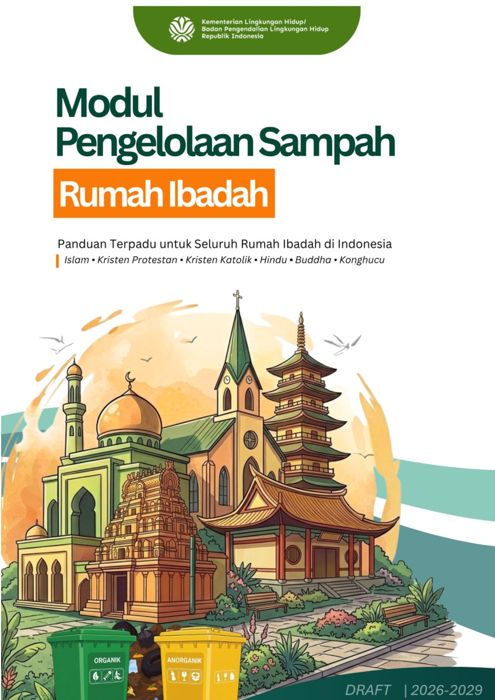
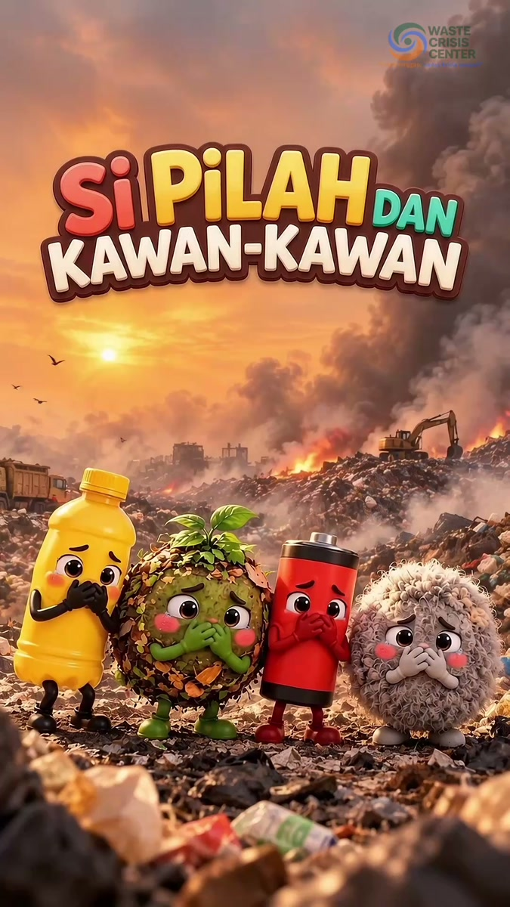
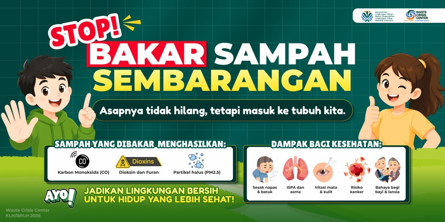

Modul Sampah Rumah Ibadah
Panduan praktis untuk membantu pengurus rumah ibadah mengelola sampah dan mengajak jamaah ikut bergerak.
Pengurus rumah ibadahLihat materi ↗
Temukan bahan edukasi persampahan untuk belajar,
berbagi, dan bergerak bersama di lingkungan Anda.

Panduan praktis untuk membantu pengurus rumah ibadah mengelola sampah dan mengajak jamaah ikut bergerak.

Materi pengenalan pemilahan sampah yang ringan untuk digunakan bersama keluarga dan komunitas.

Poster edukasi untuk mengingatkan warga tentang dampak pembakaran sampah dan pilihan yang lebih baik.
Jelajahi katalog, buka materi yang dibutuhkan, lalu isi profil singkat saat pertama kali menggunakan. Untuk setiap materi, sampaikan rencana penggunaan dan sasaran audiens sebelum mengunduh.